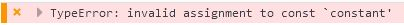

Use your browser to check if this  Error appears! If so than "const" keyword is used as a constant and can not be updated. If not and an alert window appeared in the first place than "const" can be used as a synonym for "var". const check Wiki